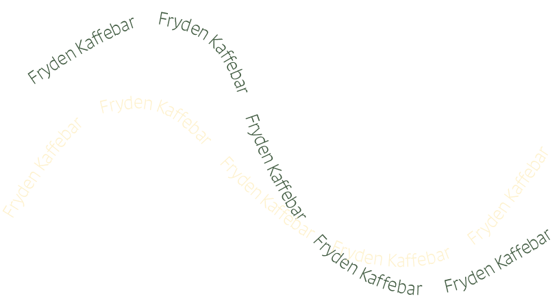
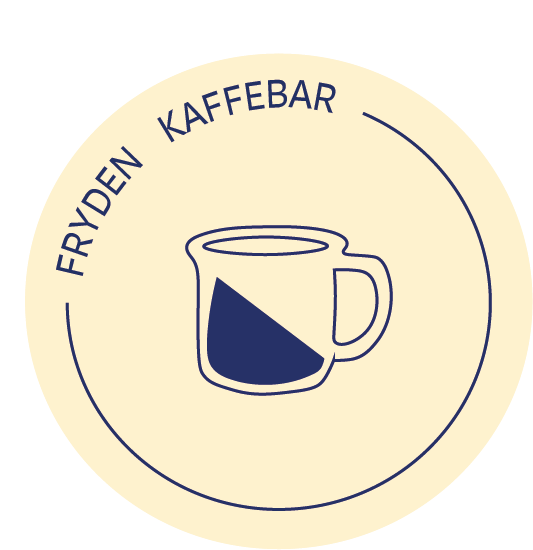

Hyggelig stemning i hjertet af Aarhus

Velkommen til Fryden Kaffebar! Jeg hedder Cecilie og det er mig, som driver Fryden til daglig. Fryden er en ny kaffebar, som ligger på Mejlgade i hjertet af Aarhus.
Jeg er passioneret omkring kaffe og sørger altid for, at kvaliteten er i top. Det er virkelig vigtigt for mig, at alle føler sig velkommen og har lyst til at hænge ud og hygge sig i caféen.
Vi ses hernede!